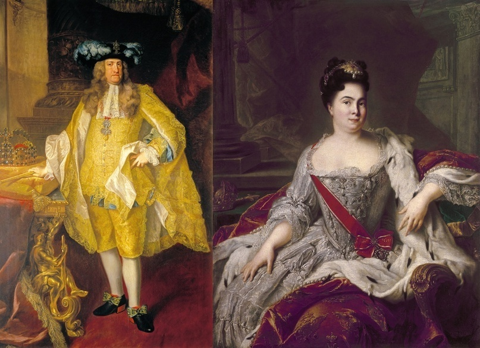

Что означает слово "Рейх"?
Автор статьи: Максим Вахминцев
Опубликовано: 29 октября 2024
Опубликовано: 29 октября 2024
Статья в группе ВК Историческая империя: https://clck.ru/3LzzV3
Мы привыкли воспринимать слово "Reich" как обозначающее Третий рейх, преступный режим германских нацистов. По понятным причинам, этот термин чаще всего вызывает негативную реакцию. Но, в действительности, сам по себе термин "Reich", переводящийся с немецкого как "империя", или "держава", имеет глубокую историю. О ней и пойдет речь в данной статье.
В английском языке есть слово "rich", означающее "богатый". Оно восходит к древнегерманскому "ricchi", переводимому как "господство", "нечто, находящееся под властью правителя". К примеру, название Австрии - Osterreich - в древности произносилось как Ostarricchi, что можно переводить как "восточная держава" или, скорее, "восток державы", поскольку Австрия являлась частью Баварской марки, защищавшей Священную Римскую империю с востока от набегов венгров. Османскую империю, например, немцы называли "Osmanisches Reich", Китайскую империю Цин - "Qing Reich", индейскую империю инков - "Inkareich", а Японскую империю периода 1868-1945 гг. - "Japanisches Kaiserreich". Даже сегодня Франция именуется немцами как "Frankreich" - государство французов. И это несмотря на то, что страна уже давно не является империей и даже монархией.
Мы привыкли воспринимать слово "Reich" как обозначающее Третий рейх, преступный режим германских нацистов. По понятным причинам, этот термин чаще всего вызывает негативную реакцию. Но, в действительности, сам по себе термин "Reich", переводящийся с немецкого как "империя", или "держава", имеет глубокую историю. О ней и пойдет речь в данной статье.
В английском языке есть слово "rich", означающее "богатый". Оно восходит к древнегерманскому "ricchi", переводимому как "господство", "нечто, находящееся под властью правителя". К примеру, название Австрии - Osterreich - в древности произносилось как Ostarricchi, что можно переводить как "восточная держава" или, скорее, "восток державы", поскольку Австрия являлась частью Баварской марки, защищавшей Священную Римскую империю с востока от набегов венгров. Османскую империю, например, немцы называли "Osmanisches Reich", Китайскую империю Цин - "Qing Reich", индейскую империю инков - "Inkareich", а Японскую империю периода 1868-1945 гг. - "Japanisches Kaiserreich". Даже сегодня Франция именуется немцами как "Frankreich" - государство французов. И это несмотря на то, что страна уже давно не является империей и даже монархией.
Двуглавый орел Священной Римской империи, головы которого венчают короны и нимбы Святого Духа,
и крест Иисуса Христа - главный символ христианства. На крыльях орла изображены гербы крупнейших герцогств,
курфюршеств, княжеств, епископств и вольных городов Германии.
и крест Иисуса Христа - главный символ христианства. На крыльях орла изображены гербы крупнейших герцогств,
курфюршеств, княжеств, епископств и вольных городов Германии.
Если Россия именовалась Третьим Римом, наследовавшим Римской и Византийской империями как оплотам мирового христианства, то Германия в своей истории имела три рейха. Первый существовал более тысячи лет - с 962 по 1806 гг. 2 февраля 962 года король Германии Оттон Великий был коронован в Риме императором. Себя он считал именно римским императором (нем. Romischer Kaiser), и последующие кайзеры (слово "кайзер" - германизированный вариант римского "caeser", более известного нам как "цезарь") вплоть до Франца II называли себя именно римскими императорами, превечными Августами. С XI века их держава, включавшая в себя королевства Германия, Италия, Богемия и Бургундия, стала называться Священной Римской империей (нем. Heiliges Romisches Reich), а в конце XV века к этому названию добавилось уточнение - "германской нации", поскольку к тому времени Германия превратилась в ключевой центр империи.
Имперская идея, идея Рейха базировалась на том, что короли Германии и императоры Священной Римской империи, будучи помазанными самим папой римским, считали себя лидерами христианской Европы и признавались таковыми на Западе. Особенно это стало актуально после падения Византии в 1453 году и утверждения на имперском троне династии Габсбургов, а также начала Великих географических открытий. Карл V стал первым и последним государем, объединившим под своей властью Священную Римскую империю и Испанию с ее обширными колониальными владениями. В это время появилось понятие "Weltreich" - "Всемирная империя".

Имперская идея, идея Рейха базировалась на том, что короли Германии и императоры Священной Римской империи, будучи помазанными самим папой римским, считали себя лидерами христианской Европы и признавались таковыми на Западе. Особенно это стало актуально после падения Византии в 1453 году и утверждения на имперском троне династии Габсбургов, а также начала Великих географических открытий. Карл V стал первым и последним государем, объединившим под своей властью Священную Римскую империю и Испанию с ее обширными колониальными владениями. В это время появилось понятие "Weltreich" - "Всемирная империя".
Карл VI - император Священной Римской империи германской нации в 1711-1740 гг.
и Екатерина I - императрица Всероссийская в 1725-1727 гг.
и Екатерина I - императрица Всероссийская в 1725-1727 гг.
До 1721 года титул императора в Европе принадлежал только Габсбургам. После провозглашения Сенатом Петра Великого "Отцом Отечества, Императором Всероссийским" в Вене долгое время не хотели признавать императорский титул Романовых. Карл VI (1711-1740) считал, что только он, будучи католиком, имеет право называть себя императором и преемником римских августов. Как отмечают российские историки, в частности С. Г. Нелипович, вопрос титулатуры оставался камнем преткновения в отношениях между Россией и Габсбургами, даже несмотря на заключение в 1723 году Венского союзного договора между двумя империями.
Лишь в 1745 году Мария Терезия, Франц Стефан и рейхстаг Священной Римской империи официально признали русскую государыню Елизавету Петровну императрицей. В Германии Россия стала называться "Russisches Kaiserreich", что на русском звучит как "Российская императорская держава", "Российская империя".
В сознании немцев Священная Римская империя продолжала оставаться единственной законной преемницей Римской, Франкской и Византийской империй. Двуглавые орлы и черно-белые флаги Габсбургов, церемонии коронации избранных римских императоров, проходившие с 1562 года во Франкфурте - все эти атрибуты влияли на сохранении в Германии имперского патриотизма, несмотря на ее разделение на множество государств.
Их правители, действуя вопреки интересам Габсбургов, пытавшихся объединить Германию вокруг Австрии, обосновывали свои претензии именно защитой империи, ее древних конституционных порядков. Особенно в этой роли преуспел король Пруссии Фридрих Великий, вокруг которого в 1780-х годов сформировался Княжеский союз немецких правителей, недовольных политикой императора Иосифа II.
Лишь в 1745 году Мария Терезия, Франц Стефан и рейхстаг Священной Римской империи официально признали русскую государыню Елизавету Петровну императрицей. В Германии Россия стала называться "Russisches Kaiserreich", что на русском звучит как "Российская императорская держава", "Российская империя".
В сознании немцев Священная Римская империя продолжала оставаться единственной законной преемницей Римской, Франкской и Византийской империй. Двуглавые орлы и черно-белые флаги Габсбургов, церемонии коронации избранных римских императоров, проходившие с 1562 года во Франкфурте - все эти атрибуты влияли на сохранении в Германии имперского патриотизма, несмотря на ее разделение на множество государств.
Их правители, действуя вопреки интересам Габсбургов, пытавшихся объединить Германию вокруг Австрии, обосновывали свои претензии именно защитой империи, ее древних конституционных порядков. Особенно в этой роли преуспел король Пруссии Фридрих Великий, вокруг которого в 1780-х годов сформировался Княжеский союз немецких правителей, недовольных политикой императора Иосифа II.
Карта Священной Римской империи германской нации в 1745-1765 гг. с изображением портретов Франца I Стефана
и Марии Терезии, а также предыдущих императоров, начиная с Оттона Великого.
Карта середины XVIII века.
и Марии Терезии, а также предыдущих императоров, начиная с Оттона Великого.
Карта середины XVIII века.
До 1806 года Священная Римская империя оставалась одним из гарантов европейского равновесия. Наполеон, считавший себя преемником Карла Великого и желавший объединить Европу на либерально-демократических основах, создал Рейнский союз немецких государств, сделавший бессмысленным и невозможным дальнейшее существование империи. 6 августа 1806-го Франц II, ранее учредивший Австрийскую империю из наследственных земель Габсбургов, не только отрекся от престола Священной Римской империи, но и фактически распустил ее.
С 1804 по 1867 год Австрийская империя называлась как "Kaisertum Osterreich", что дословно можно переводить как "Императорство Австрийское". С одной стороны, в названии страны уже имелось слово "Reich", потому повторяться было бы стилистически неверно. С другой стороны, Габсбурги тем самым могли подчеркнуть, что Австрия напрямую не наследует Первому Рейху и не претендует на лидерство в христианском мире. Слово "императорство" могло означать и то, что государственное единство наследственных земель опиралось исключительно на династию Габсбургов, а не какую-либо титульную нацию.
Ситуация изменилась в 1867 году, когда Австрийская империя была преобразована в двуединую Австро-Венгрию. Из названия страны исчезло слово "императорство", а немцы и венгры получили статус титульных наций империи, несмотря на то, что суммарно не составляли и половины от всего ее населения.
С 1804 по 1867 год Австрийская империя называлась как "Kaisertum Osterreich", что дословно можно переводить как "Императорство Австрийское". С одной стороны, в названии страны уже имелось слово "Reich", потому повторяться было бы стилистически неверно. С другой стороны, Габсбурги тем самым могли подчеркнуть, что Австрия напрямую не наследует Первому Рейху и не претендует на лидерство в христианском мире. Слово "императорство" могло означать и то, что государственное единство наследственных земель опиралось исключительно на династию Габсбургов, а не какую-либо титульную нацию.
Ситуация изменилась в 1867 году, когда Австрийская империя была преобразована в двуединую Австро-Венгрию. Из названия страны исчезло слово "императорство", а немцы и венгры получили статус титульных наций империи, несмотря на то, что суммарно не составляли и половины от всего ее населения.
Антон фон Вернер. Провозглашение в Версальском дворце 18 января 1871 года Германской империи.
Среди немцев была популярна легенда о том, что однажды спящий дух императора Фридриха Барбароссы воскреснет для того, чтобы возродить Германию. 18 января 1871 года в Версальском дворце Отто фон Бисмарк и правители немецких государств провозгласили короля Пруссии Вильгельма I германским императором (нем. Deutscher Kaiser).
Так возник Второй Рейх - Германская империя (нем. Deutsches Kaiserreich), а кайзер Вильгельм стал считаться спасителем и восстановителем Германии. Культ Гогенцоллернов и канцлера Бисмарка всячески поощрялся государственной властью, служил вдохновением для деятелей искусства и исторической науки, клеймивших императоров Гогенштауфенов и Габсбургов за пренебрежение интересами Германии в угоду личным амбициям.
Корона Карла Великого, ставшая исторической регалией Германии, продолжала при этом сохраняться в Венской сокровищнице, поскольку Габсбурги отказались передавать ее Гогенцоллернам, вопреки всем усилиям немецких дипломатов.
Так возник Второй Рейх - Германская империя (нем. Deutsches Kaiserreich), а кайзер Вильгельм стал считаться спасителем и восстановителем Германии. Культ Гогенцоллернов и канцлера Бисмарка всячески поощрялся государственной властью, служил вдохновением для деятелей искусства и исторической науки, клеймивших императоров Гогенштауфенов и Габсбургов за пренебрежение интересами Германии в угоду личным амбициям.
Корона Карла Великого, ставшая исторической регалией Германии, продолжала при этом сохраняться в Венской сокровищнице, поскольку Габсбурги отказались передавать ее Гогенцоллернам, вопреки всем усилиям немецких дипломатов.
Несмотря на то, что короли Пруссии были протестантами, а Германская империя, в отличие от Священной Римской, являлась национальным государством, историки предпринимали попытки обосновать историческую преемственность обеих держав. Герб Второго Рейха венчала корона Карла Великого несмотря на то, что Гогенцоллерны до самого отречения Вильгельма II и падения Германской империи в 1918 году так и не смогли ею короноваться.
До 1945 года понятие государственности, в сознании немцев, продолжало ассоциироваться с идеей империи - слова "рейх" и "государство" были идентичны. Веймарская республика лишь позднее стала общепринятым названием Германского государства в 1919-1933 гг. В то время страна официально называлась Германским рейхом (нем. Deutsches Reich).
Артур Меллер ван дер Брук считал необходимым создать Третий рейх, который был бы преемником Первой и Второй Германских империй. Его идеями воспользовались нацисты, которые после прихода Гитлера к власти и совмещения им в 1934 году постов президента и рейхсканцлера стали называть Германию Третьим рейхом.
До 1945 года понятие государственности, в сознании немцев, продолжало ассоциироваться с идеей империи - слова "рейх" и "государство" были идентичны. Веймарская республика лишь позднее стала общепринятым названием Германского государства в 1919-1933 гг. В то время страна официально называлась Германским рейхом (нем. Deutsches Reich).
Артур Меллер ван дер Брук считал необходимым создать Третий рейх, который был бы преемником Первой и Второй Германских империй. Его идеями воспользовались нацисты, которые после прихода Гитлера к власти и совмещения им в 1934 году постов президента и рейхсканцлера стали называть Германию Третьим рейхом.
В 1937 году на одной из речей Гитлера возле фюрера и флага со свастикой находились имперские клейноды - регалии власти императоров Священной Римской империи. В их числе была и корона Карла Великого.
Однако к концу 1930-х годов именно отсылки к Первому (Священной Римской империи) и Второму (Германской империи) рейхам как к монархическим государствам стали причиной отказа нацистов, чья идеология противоречила принципам христианства, от именования Германии "Третьим рейхом". До 1942 года страна именовалась Германским рейхом, а после 1942-го стала называться нацистами, по аналогии с Великобританией, "Великогерманским рейхом", поскольку Гитлер стремился к объединению всех немцев в едином государстве.
В советские годы термин "рейх", по понятным психологическим и идеологическим причинам, был под табу. Негативное отношение к этому понятию остается и по сей день. Однако в данной статье мы выяснили, что слово "рейх" само по себе не имеет нацистского или фашистского происхождения, поскольку имеет глубокую историю и ранее применялось на протяжении более тысячи лет к разным европейским державам.
Однако к концу 1930-х годов именно отсылки к Первому (Священной Римской империи) и Второму (Германской империи) рейхам как к монархическим государствам стали причиной отказа нацистов, чья идеология противоречила принципам христианства, от именования Германии "Третьим рейхом". До 1942 года страна именовалась Германским рейхом, а после 1942-го стала называться нацистами, по аналогии с Великобританией, "Великогерманским рейхом", поскольку Гитлер стремился к объединению всех немцев в едином государстве.
В советские годы термин "рейх", по понятным психологическим и идеологическим причинам, был под табу. Негативное отношение к этому понятию остается и по сей день. Однако в данной статье мы выяснили, что слово "рейх" само по себе не имеет нацистского или фашистского происхождения, поскольку имеет глубокую историю и ранее применялось на протяжении более тысячи лет к разным европейским державам.